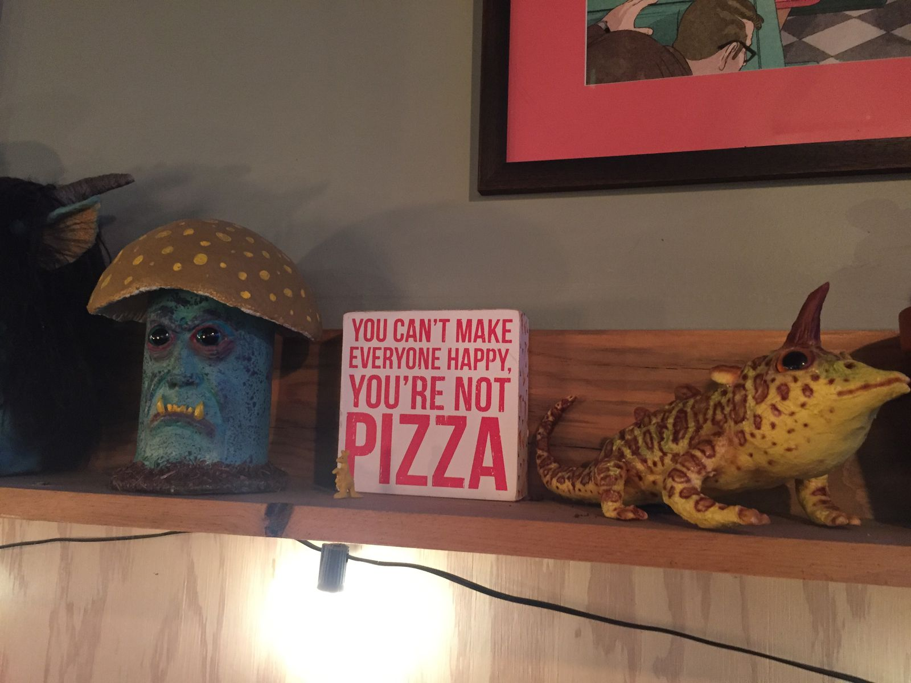
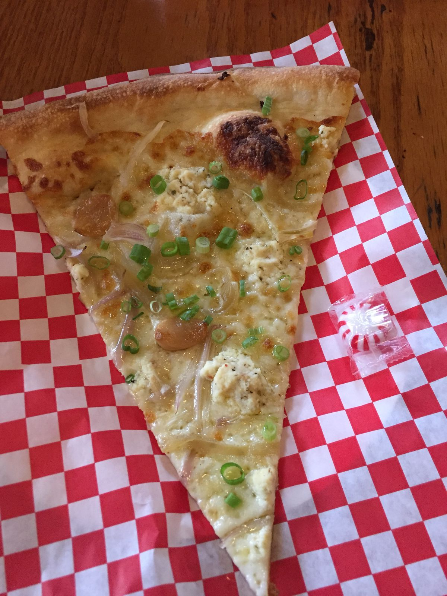
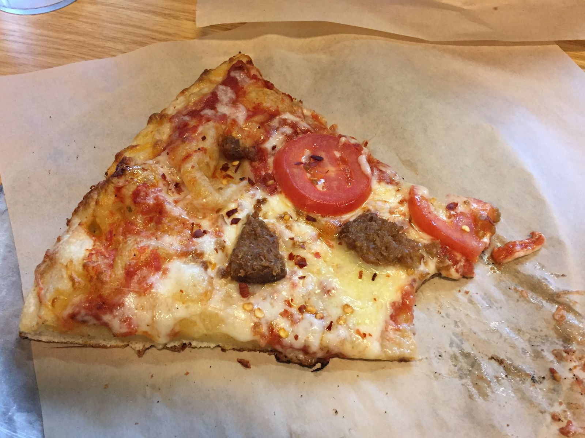
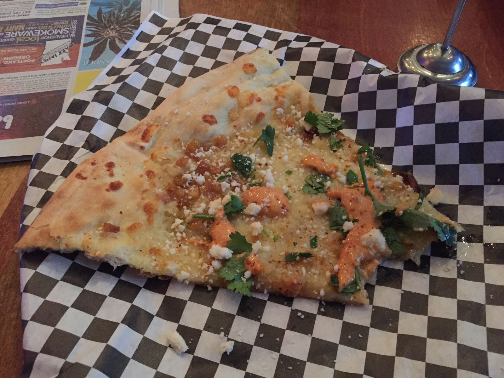
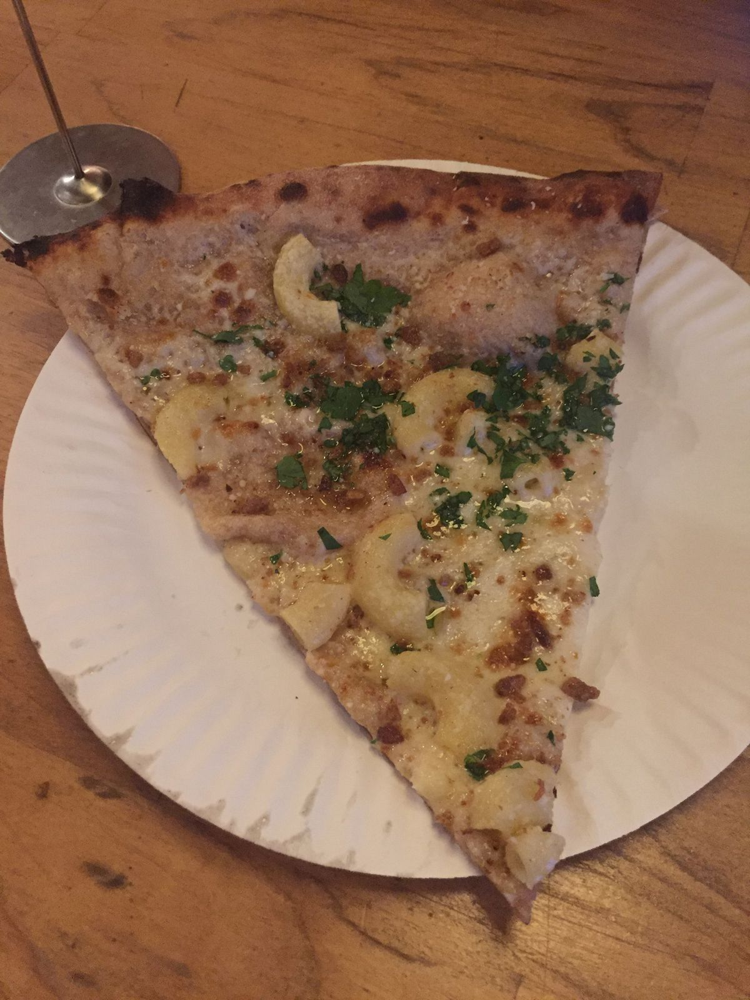
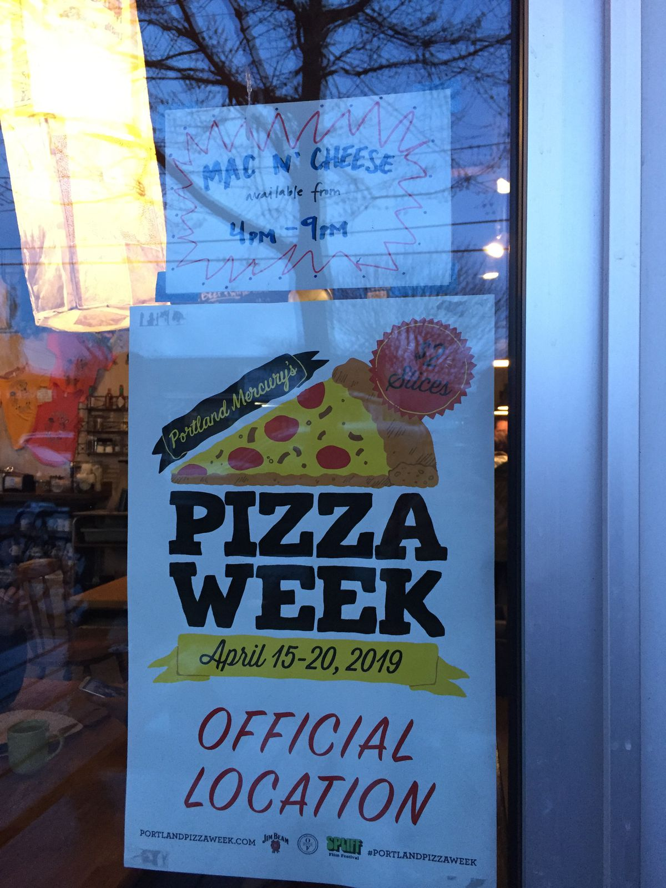

Portland Pizza Week!
Just this afternoon we realized that it was Portland Pizza Week and we knew how we needed to spend the rest of the day. As Zach and Nicole worked on Yurt painting and construction, I reviewed all 45 pizza offerings and made a shortlist of the 10 best slices. We all agreed that 4 is the most we could eat as we embarked into the city.

First up was Straight from New York Pizza downtown, where we had the very garlicky Fearless Vampire Killer / Date Night Special. It was a great start to the evening.

Next was the Natural at HOTLIPS Pizza Civic, also downtown. The name is kind of a joke, as it includes Beyond Burger, a vegan "meat". It will be remembered for its greasiness. I also wanted to get a pesto breadstick here, but I showed restraint, which I would later be thankful for.

For our third slice, we drove across town for the Elote Pie at Blackbird Pizza. Zach in particular was excited about this slice. It ended up being good, but not quite as good as we expected. It needed more roasted corn.

Lastly, already feeling full, we ended at Handsome Pizza for the Mac 'n' Cheese pizza. It's basically pizza with mac and cheese on it. There was a line out the door that we waited in for about 20 minutes. Someone leaving told us that it was worth the wait. Luckily, we got there just in time, as there were only sixteen slices left for the night. As we were nearing the last of their pizzas, they were a big skimpy on the pasta, with maybe six elbows per slice. I honestly couldn't tell you whether it was good because I was so stuffed at that point that I felt awful. I didn't want to finish it but my honor dictated that I must. So I ate the whole thing and enjoyed it in some sense of the word enjoy that many may not understand.

One of my friends has a rule that you cannot mix two types of carbs on a food. This pizza flagrantly violates that rule and was proud of it.

Oh, did I say that we ended with this pizza? We did not. I still needed my ice cream for the night. Feeling a bit like a beached whale, I went to Salt and Straw for a scoop of rhubarb crumble with toasted anise in a homemade waffle cone. It was delicious and I ate it all. I have no ragrets.